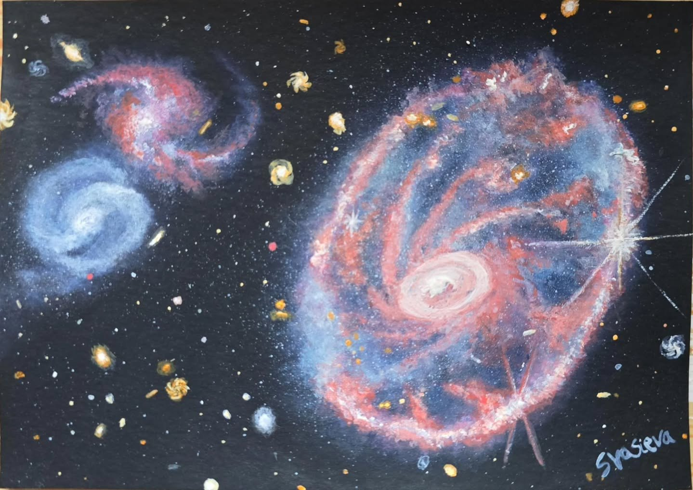

The Cartwheel Galaxy
The Cartwheel Galaxy!
It's believed that the Cartwheel Galaxy was once a normal spiral galaxy, but then underwent a face-on collision with a smaller galaxy, causing a powerful gravitational shock wave that gave rise to its now very complicated structure.